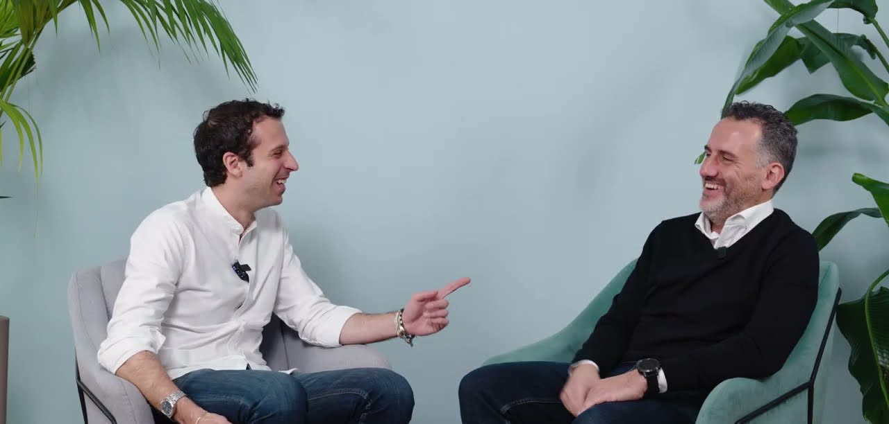

Industria
Algecar.
Il sapere tecnico, a portata di domanda.
Un’applicazione AI per consultare i manuali delle macchine durante l’assistenza.

Cliente
Algecar
Intervento
AI generativa e ricerca documentale
Fonte
Il Salotto di LAIF
Il problema.
I manuali delle macchine erano disponibili in digitale, ma lunghi e in più lingue. I tecnici si affidavano spesso all’esperienza dei colleghi e alle telefonate per trovare una risposta.
La soluzione.
LAIF ha realizzato un’applicazione in cui caricare i manuali e porre domande specifiche. Il sistema cerca nella documentazione e indica dove si trova l’informazione, attraverso un’interfaccia utilizzabile anche da telefono e tablet.
Partire dal sapere che esiste già.
Il confronto con Mattia Gerardi ha portato l’attenzione sui manuali e sul lavoro dell’assistenza. Nel video si parla anche di personalizzare le risposte rispetto alle indicazioni di sicurezza e al modo di operare dell’azienda.
Il progetto, raccontato insieme.
La conversazione integrale con Algecar, dal canale ufficiale LAIF.
Hai un problema simile?
Raccontaci cosa vorresti cambiare. Definiamo il primo passo insieme.
Parliamoci